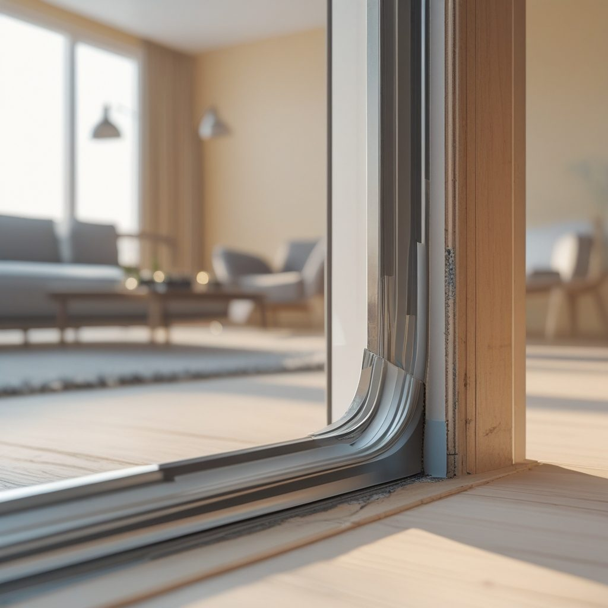
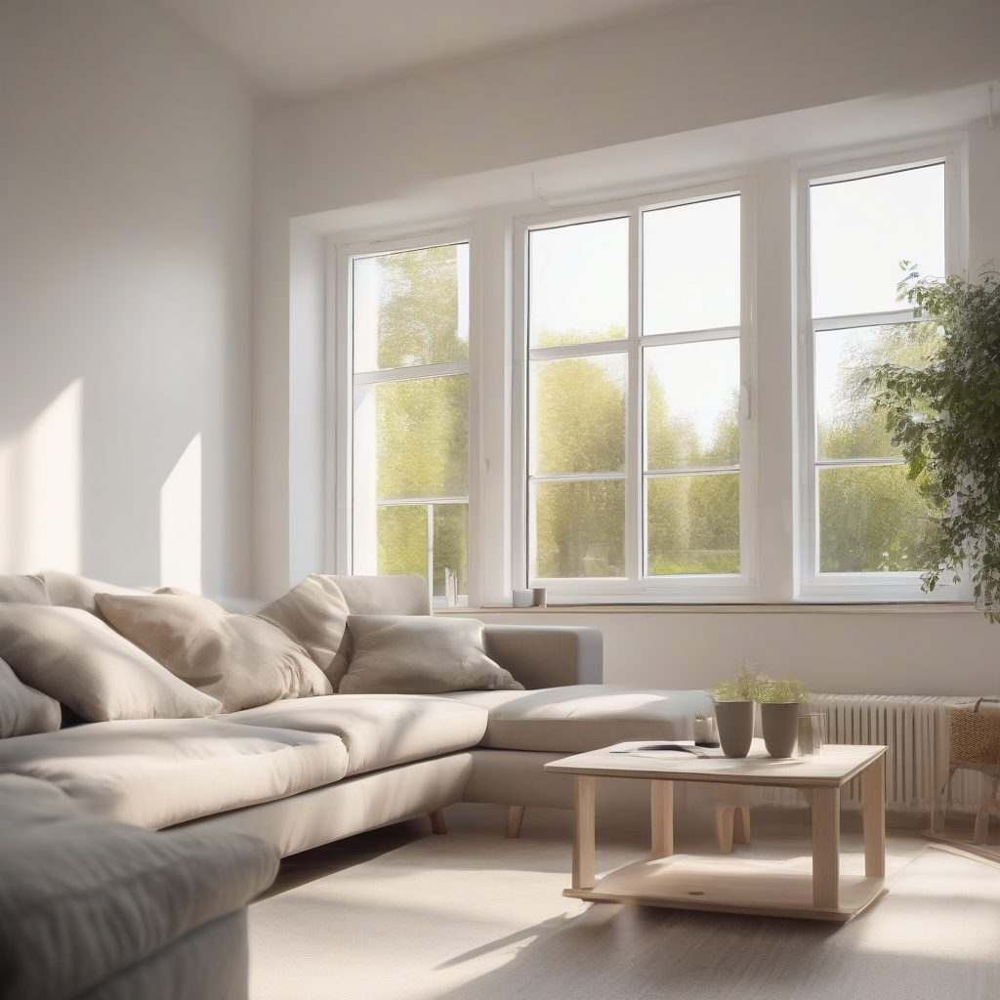

Шпросов и партнёры — Центральный
Окна под ключ в Москве с 2014 года
Ставим и обслуживаем пластиковые окна и балконные блоки в Москве с 2014 года. Работаем по всем округам, свой замерщик и свои монтажные бригады, без посредников. Замер бесплатный, выезд в день обращения или на следующий день.
Частые вопросы
Ставите ли окна зимой?
Ставим круглый год: зимой монтаж идёт по тёплой технологии, шов не промерзает, квартира не остаётся без тепла больше часа на одно окно.
Можно менять окна по частям?
Да, остекляем поэтапно — по одному помещению, с отдельным замером и своим договором на каждый этап.
Гарантии
Гарантия 5 лет на профиль и стеклопакет, 3 года на монтажный шов, 1 год на фурнитуру с бесплатной регулировкой.
- Выезд по гарантии в течение двух рабочих дней, без платы за вызов.
- Не покрываем механические повреждения стекла и самостоятельную разборку фурнитуры.
Контакты и время приёма
Принимаем заявки по телефону и в мессенджерах ежедневно с 9 до 21 по Москве. Замер согласуем на ближайшее удобное время, в том числе в выходные. Офис и цех в Москве, выезд по городу и ближнему Подмосковью.
Как мы работаем
- Заявка и бесплатный замер: приезжаем в удобное время и считаем цену на месте.
- Договор с фиксированной ценой и изготовление 5-7 рабочих дней.
- Монтаж за один день, уборка после себя, оплата после установки.
Бесплатный замер
Оставьте заявку на бесплатный замер: приедем в удобное время, посчитаем на месте и зафиксируем цену в договоре.
Окна под ключ в Москве3 статьи
Все статьи

Монтажный шов в Центральном округе: за сколько привезутЧитатель спрашивает: «Монтажный шов в Центральном округе: за сколько привезут?» В Центральном округе Москвы эту услугу заказывают отдельно, но итог зависит о…Как выбрать Рехау в Центральном округе«Как выбрать Рехау в Центральном округе?» — спрашивает читатель, когда створка уже цепляет раму. В Центральном округе Москвы мы проверяем профиль Рехау и раб…
Ремонт косых окон в Центральном округе: как всё проходитЧто делать, если окно перекосило, а дом стоит в Центральном округе Москвы? Ремонт косых окон в Центральном округе: как всё проходит — сначала замер диагонале…